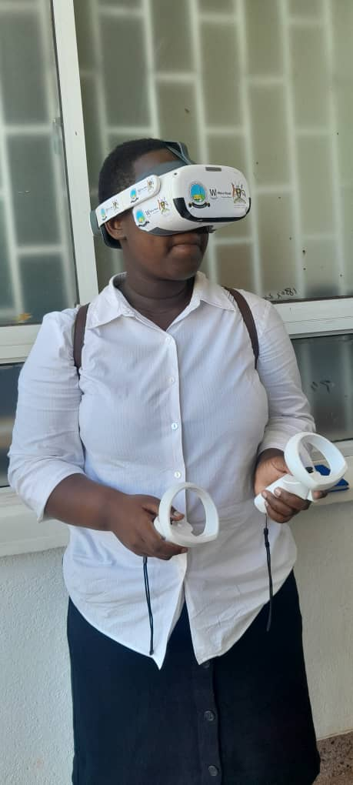

About Me

Hello! I'm NAZZIWA SHARIFAH, a passionate developer and computer scientist with a knack for solving complex problems and creating innovative solutions. I specialize in software development, data analysis, and artificial intelligence. I am always eager to learn and collaborate on exciting projects.
Experience
Frontend and Backend Developer - LANE SERVICES
November 2024 - Present
As a Frontend and Backend Developer at LANE SERVICES, I am responsible for designing, developing, and maintaining both the client-side and server-side components of web applications. My role involves collaborating with cross-functional teams to deliver high-quality software solutions that meet client requirements and enhance user experience. Key accomplishments include:
- Developed and implemented responsive web interfaces using HTML, CSS, and JavaScript, ensuring seamless user experiences across various devices and browsers.
- Designed and maintained robust backend systems using Python and Node.js, optimizing performance and scalability.
- Integrated RESTful APIs and third-party services to enhance application functionality and streamline data exchange.
- Collaborated with UX/UI designers to create intuitive and visually appealing user interfaces.
- Conducted code reviews and implemented best practices to ensure code quality and maintainability.
- Led the migration of legacy systems to modern frameworks, resulting in improved performance and reduced technical debt.
- Mentored junior developers and provided technical guidance to support their professional growth.
Marketing Specialist - The Stationery Haven
October 2024 - Present
As a Marketing Specialist at The Stationery Haven, I am responsible for developing and executing marketing strategies to promote our wide range of stationery products. My role involves creating engaging content, managing social media campaigns, and analyzing market trends to drive brand awareness and increase sales. Key accomplishments include:
- Successfully launched a social media campaign that increased brand engagement by 40% within the first three months.
- Developed and implemented a content marketing strategy that boosted website traffic by 25% and improved SEO rankings.
- Collaborated with the design team to create visually appealing marketing materials, including brochures, flyers, and email newsletters.
- Conducted market research to identify customer needs and preferences, leading to the introduction of new product lines that increased sales by 15%.
- Managed partnerships with influencers and bloggers to expand brand reach and drive product awareness.
- Organized and executed successful promotional events and product launches, resulting in a significant increase in customer acquisition.
Contact & Social Media